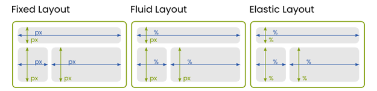

what is a web layout
Types of web layouts

Let's list them and discuss their main characteristics:
- Fixed Layout:
- has a set width (usually measured in pixels) and does nto change size based on the browser window.
- is best suited for desings where precise control over width and spacing is required.
- can be come less user-friendly on devices with screen sizes different from the one the website was
designed for.
- Liquid or fluid layout
- uses percentages instead of fixed pixel values for widths.
- stretches and contracts with the browser window, filling the available space.
- is more adaptable than fixed layouts, but can sometimes lead to uneven or stretched content if not
managed carefully
- Elastic layout
- combines fixed and fluid layouts using relative units like ems for widths.
- scales depending on the user's font size settings, making the layout accessible but also pontetially
unpredictable in terms of its structure.
- Flexible layout
- a mix of fluid and elastic but with more control.
- often incorporates media queries to change styles based on different device characteristics, leading to
a responsive desing.
- Responsive design
- an advanced form of flexible layout
- uses CSS media queries to adapt the layout to different screen sizes and orientations, ensuring optimal
viewing experience on any device.
- often involves flexible grids, scalable images, and sometimes different content for different devices.
- Adaptive desing
- similar to responsive design - uses distinct layouts for different screen sizes.
- instead of one fluid layout, it often has several fixed layouts designed for specific screen sizes.